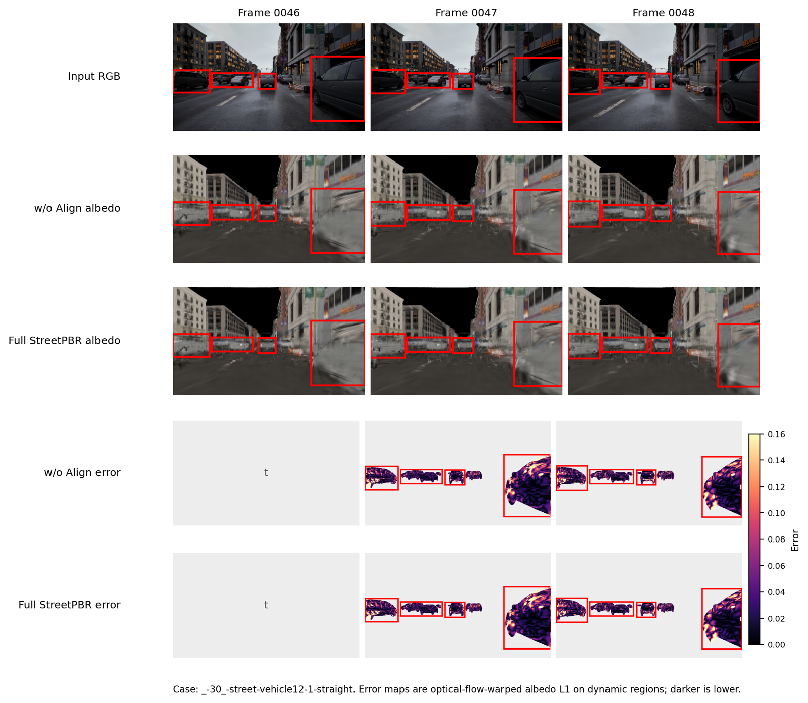

Best baseline: 0.273 rad
At a glance
A relightable representation for moving street scenes.
StreetPBR recovers geometry, materials, and illumination in dynamic urban scenes, then uses the recovered PBR representation for temporally coherent relighting. The system starts from unconstrained multi-view photos and does not require LiDAR point-cloud initialization.
The paper also introduces DynamicStreet, a synthetic Unreal Engine benchmark with realistic ego-vehicle trajectories and ground-truth geometry, materials, and illumination for controlled evaluation of dynamic inverse rendering.
Visual evidence
Relighting should change illumination, not bake it into color.
Different target environment maps produce coherent changes in global tone, local contrast, road reflections, vehicles, and building facades across multiple dynamic street scenes.

Intrinsic decomposition
Cleaner albedo and normals on dynamic urban content.
Compared with inverse-rendering baselines, StreetPBR keeps road markings, vehicles, and building boundaries more consistent across rendered appearance, albedo, and normal outputs.

Quantitative snapshot
The main numbers reviewers should see first.
Best baseline: 20.91 dB
Best baseline: 20.62 dB
w/o alignment: 0.063
Method
Four pieces keep geometry, material, and lighting disentangled.
LiDAR-free Gaussian scaffold
Image-based camera and point-map initialization builds the scene representation from photos.
Scene-aware dynamic masks
Object-level refinement stabilizes moving cars, pedestrians, cyclists, and motorcycles.
Sunlight and shadow modeling
Material priors, relative-lightness shadows, and Lambertian cues estimate dominant sunlight.
Cross-frame material alignment
Dynamic material Gaussians are aligned over time to reduce flicker during relighting.

DynamicStreet benchmark
A controlled testbed for dynamic urban inverse rendering.
DynamicStreet is built in Unreal Engine using realistic ego-vehicle trajectories, synchronized RGB, depth, normal, albedo, metallic, roughness, and illumination annotations.
Temporal stability
Moving objects need stable materials over time.
Cross-frame material texture alignment reduces dynamic-region albedo flicker and makes relit videos more coherent across adjacent frames.

Citation
BibTeX
@misc{li2026streetpbr,
title={StreetPBR: Dynamic Relightable Urban Scene Reconstruction from Unconstrained Photos},
author={Li, Junnan and Xie, Haozhe and Zhang, Shengping},
year={2026},
note={Manuscript}
}